ISBN nije baza podataka
Zašto ISBN pomaže u prepoznavanju knjiga, ali ne zamjenjuje metapodatkovne sisteme, i kako funkcionira lanac pretraživanja metapodataka u projektu Let Books.
Kad uzmete u ruke štampanu knjigu, crtični kod na poleđini najvidljiviji je identifikator koji nosi. Taj identifikator je ISBN — međunarodni standardni knjižni broj. U knjižničnim katalozima, internet trgovinama i metapodatkovnim sistemima često djeluje kao ključ baze podataka. Ali ISBN nije baza podataka, a tretiranje kao takve dovodi do stvarnih problema u doniranju knjiga.
Šta je ISBN zapravo
ISBN je jedinstveni identifikator dodijeljen određenom izdanju objavljene knjige. Trenutni standard, ISBN-13, koristi 13 cifara s kontrolnom cifrom za otkrivanje grešaka. Stariji format ISBN-10 još se nalazi na knjigama objavljenim prije 2007.
ISBN identificira izdanje, a ne djelo. Na primjer, drugo i treće izdanje istog udžbenika imaju različite ISBNove. Tvrdi i meki povez iste knjige imaju različite ISBNove. Engleski prijevod i izvorno francusko izdanje imaju različite ISBNove.
To je korisna preciznost — ali donosi važna ograničenja.

Šta ISBN ne može
Nema ga svaka knjiga
Knjige objavljene prije 1970, samostalne publikacije, akademski materijali iz ograničenih naklada i knjige manjih izdavača često uopće nemaju ISBN. U akademskim baštinskim zbirkama — na koje se ovaj projekt fokusira — udžbenici prije 1970, nastavni materijali i lokalno štampani sadržaji uobičajeni su i vrijedni.
ISBN ne opisuje stanje
Knjižnica želi znati je li primjerak oštećen vodom, ima li bilješke ili mu nedostaju stranice. ISBN ne daje nijednu od tih informacija. Identifikator je isti za besprijekoran primjerak i za onaj koji je dvadeset godina ležao u vlažnom podrumu.
ISBN ne opisuje provinijenciju
Čiji je ovo primjerak? Je li ga preporučio profesor? Ima li potpis prethodnog vlasnika ili knjižnični pečat? Koja ga je institucija posjedovala? ISBN o svemu tome šuti.
ISBN ne opisuje lokaciju
Za projekt doniranja knjiga drugo najvažnije pitanje nakon "šta je to?" jest "gdje je?". ISBN nema odgovor na to. Lokacija je logistički podatak koji se vodi odvojeno u hijerarhiji skladišnih mjesta.
ISBN može biti pogrešan ili ponovno korišten
Postoje pogrešno odštampani ISBNovi. Isti ISBN mogu slučajno koristiti različiti izdavači. Optičko čitanje može pogrešno očitati cifre. Kontrolna cifra otkriva greške u jednoj cifri, ali ne sve.
Kako Let Books postupa s ISBNom
Lanac pretraživanja metapodataka u statičkom demo okruženju Let Books slijedi praktičnu strategiju padanja, implementiranu u static-demo/app.js:2269:

- Normaliziraj i potvrdi ISBN. Ukloni razmake i crtice, X pretvori u veliko slovo, provjeri kontrolnu cifru.
- Prvo upitaj Open Library putem njihovog javnog sučelja.
- Ako Open Library ne vrati korisne podatke, upitaj Let Books metapodatkovni API.
- Ako nijedan pružatelj nema podatke, osloni se na ručni unos.
Ručni unos nikada nije blokiran. Ako svi pružatelji otkažu — bilo zbog mrežne greške, ograničenja brzine ili stvarne odsutnosti podataka — korisnik može ručno unijeti naslov, autora, izdavača i godinu te nastaviti s katalogizacijom.
Lanac padanja namjerno je jednostavan. Ne postoji jedinstvena tačka otkaza jer nijedan pružatelj nije obavezan. Svaki pružatelj je izboran i nezavisno zamjenjiv.
Dokazi za ovaj lanac u repozitoriju su u static-demo/app.js (funkcija lookupMetadataByIsbn u retku 2316 i dvije funkcije koje slijede) te u docs/book-metadata.md (arhitekturna dokumentacija).
Zašto je to važno za doniranje knjiga
Kad darovatelj katalogizira zbirku akademskih knjiga, neke će imati ISBN, a neke neće. Knjige bez ISBNa često su najzanimljivije — starija izdanja, lokalno objavljeni materijali, kompilacije za pojedine predmete ili knjige izdavača iz bivše Jugoslavije čiji identifikatori nikad nisu dospjeli u globalne baze podataka.
Postupak katalogizacije ne smije kažnjavati darovatelja zbog nedostatka ISBNova. Svaka značajka koja radi s ISBNom mora raditi i bez njega: praćenje lokacije, učitavanje fotografija, izvoz u Excel, skupni pregled. ISBN je pomagalo, a ne zahtjev.
Projektna specifikacija, AGENTS.md: "Model mora dozvoljavati nepotpune podatke. ISBN nije obavezan."
Šta donosi budućnost
Trenutni lanac padanja širit će se s novim pružateljima. Crossref, Wikidata, OpenAlex i COBISS su kandidati. Svaki će ući u isti lanac: pokušaj redom, agresivno keširaj, elegantno otkaži.
Ali lanac sam po sebi nije cilj. Cilj je doći od fizičke knjige do dovoljno metapodataka da knjižnica može odlučiti želi li knjigu. ISBN pomaže, ali sistem mora raditi i kad ISBN nije dostupan.